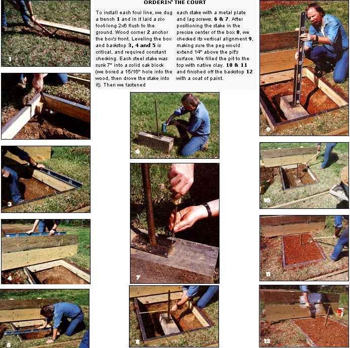

Most horseshoe courts constructed for tournaments these days are hard-surfaced, with the pitcher's areas and the walkways between them paved in concrete. Some courts even have rubber, artificial "clay" in the pit areas instead of the traditional dirt, sand or real clay. We went the traditional route.
The diagram and materials list pretty much speak for themselves. All lumber used was pressure-treated, except for the oak block, which was a scrap piece left over from a staffer's post-and-beam house construction (a section of old railroad tie would do just fine). We obtained the metal strapping and one-inch-diameter steel stakes from a welding supply house.
To keep errant horseshoes from bounding into spectators or far off the court, we added a backboard to each end, nailing the posts directly to the pit box for extra stability. Backboards are, however, strictly optionaland in this case, accounted for more than half the total materials cost. The 2 X 6 foul lines also are optional.
Blue clay is the preferred material for horseshoe pits, but in some areas-such as here in western North Carolina-it can be hard to come by. We used good old southern red clay. Check with your local soil conservation office to see if blue clay occurs naturally in your area; if not, substitute any easily available gummy clay, or-for that matter-just dirt or sand.
Altogether, including the time spent cutting the lumber to size, digging the pits, getting the boxes and backboards in place and leveled, and painting, the court took three of us a couple of afternoons to build. Total cost, just under $115.
|
 |
|
|